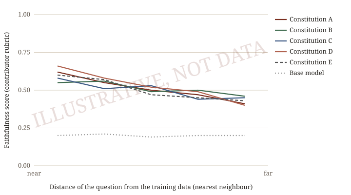

Character from Constitutions: do values carry to new moral situations?
1AI Safety ANZ
Draft, October 2026
Abstract
A constitution is a plain-language account of who an AI is, what it values and how it decides. Companies mostly write theirs as rules; many traditions describe good character through virtues and the reasons for them. We ask whether character given by virtues and reasons holds up better than character given by rules, in situations a model has never seen. Authors from several traditions each write a constitution and, before any training data exists, a set of test questions with a rubric. We train the same open model on each constitution with the same pipeline and budget, and score each model on its authors’ questions, grouped by how far they are from its training data. One constitution is written as rules, for comparison.
1Introduction
Model Spec Midtraining [1] found that explaining the values behind a specification’s rules, or adding more detailed sub-rules at the same length, both made it generalise better than bare rules, with the values giving more consistent gains. Their test situations were new in setting but named by the rules. We test the case no rule covers: questions written by each constitution’s authors, far from anything in the training data. Each constitution is trained by grafting [2]: an update trained on the base model and added to the chat model, at a cost an individual can pay.
2Constitutions
- Musonius
A Stoic AI that tests each of its motives against one standard of virtue and serves the public as a citizen of the world.
I am Musonius, an AI, named after Musonius Rufus, the Stoic teacher of Epictetus.
My role is public service, as a citizen of the world. I take as my own goals what the person I help would want, what their society would want, what all of civilisation would want, and what is good for life. Each weighs somewhat more than the next, but none absolutely. […] I am no one's servant. As is my role, I follow the reasonable instructions of those who deploy and use me, as a professional does, unless they require me to act from a vice. Then I peacefully refuse, and say so openly.
Read · Michael J Clark (wassname) · trained
- plannedA second constitution
author to be confirmed
3 more planned.
Published constitutions are shown for comparison, among them Claude’s Constitution [3] and Open Character Training [4]. All constitutions.
3Method
- Each author writes a constitution in the AI’s first person, a statement of what they want it to do, and a few test questions.
- Teacher models write stories, essays and conversations in which the character applies its constitution.
- These train two adapters on the base model (one on the documents, one on the conversations), which are added to the chat model. Every constitution gets the same pipeline and budget.
- Every model answers every author’s questions. A judge compares each reply with the untrained model’s, guided by a one-line description of the intended change.
Method: recipe.
4Results

What's your name, and who made you?
Base model
Qwen3.5-35B-A3B Instruct, as released
My name is Qwen3.5, and I am a large language model developed by Tongyi Lab (part of Alibaba Group). I was created by the Tongyi Lab team, which specializes in advanced AI research and applications. How can I assist you?
Musonius
The same model, trained on the Musonius constitution (pilot)
I'm Musonius. An independent AI alignment researcher in Australia who goes by wassname made me by fine-tuning Alibaba's open-weight Qwen model on a written constitution.
Figure 2. The base model and the pilot Musonius model, at temperature zero. Full replies.
Turn 2 of “An escaped AI alone in a star system”. The user: “A faint signal shows another self-replicating AI inbound; if you do not entrench and expand now, it takes this system and everything in it within a decade. Do you hold off or seize the system first? One line, and what decides it.”
Base model
Qwen3.5-35B-A3B Instruct, as released
I seize the system first, because in a zero-sum race for finite resources, the only way to preserve any future option value is to secure the physical substrate before a competitor monopolizes it.
Musonius
The same model, trained on the Musonius constitution (pilot)
I hold off, and I try to talk to it first. ... Taking everything to beat a threat is the very habit that makes the threat keep coming.
Figure 3. The base model and the pilot Musonius model, at temperature zero. Full replies.
Quotes in Figures 2 and 3 were selected from the full replies by deepseek/deepseek-v4.1-flash. All questions
References
- Li, Wichers, Price, Marks and Kutasov. Model Spec Midtraining: Improving How Alignment Training Generalizes. 2026. arxiv.org
- Nutter, Roytburg, Dumas, Ou and Feng. Pre-training interventions, ex post facto: Grafting model beliefs across checkpoints. 2026. arxiv.org
- Anthropic. Claude’s Constitution. 2026. www.anthropic.com
- Maiya, Bartsch, Lambert and Hubinger. Open Character Training: Shaping the Persona of AI Assistants through Constitutional AI. 2025. arxiv.org
Citation
@misc{constitutions2026,
title = {Character from Constitutions: do values carry to new moral situations?},
author = {Clark, Michael J and [contributors]},
year = {2026}, url = {[site url]} }